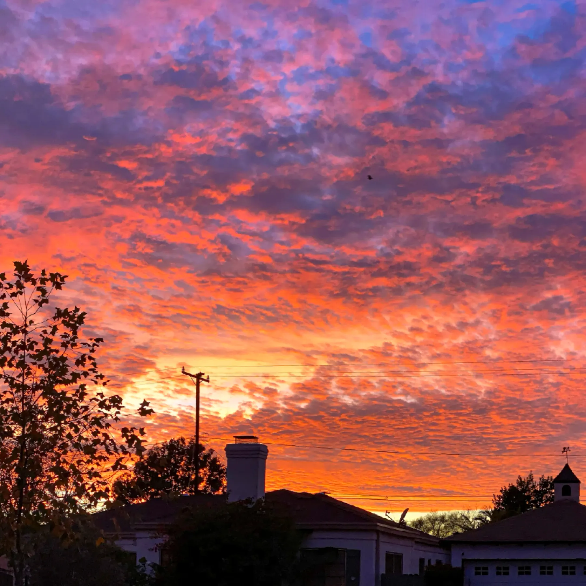

Sunsets and Their Tranquility
Introduction
Introduction
Sunsets are one of nature’s most mesmerizing spectacles, captivating people across cultures and generations. They provide a serene transition from the bustling activities of the day to the calm of the night. The shifting colors in the sky create a sense of tranquility, allowing people to pause, reflect, and appreciate the beauty of nature.
The Beauty of Sunsets
The beauty of sunsets lies in their ever-changing palette of colors. As the sun sets, hues of gold, orange, pink, and violet blend seamlessly across the sky, creating a breathtaking display. This natural phenomenon serves as a daily reminder of the wonders of our world, inspiring awe and appreciation in those who witness it. The serene ambiance of a sunset offers a perfect opportunity to unwind, reflect, and find inner peace amidst the chaos of everyday life.
The Emotional Impact
Sunsets evoke deep emotions, ranging from nostalgia to hope. The colors and calmness of dusk can provide a sense of comfort, helping individuals feel more connected to nature and themselves. The fleeting beauty of a sunset serves as a reminder of the impermanence of life, encouraging mindfulness and gratitude. Whether shared with loved ones or experienced in solitude, sunsets have the power to stir emotions and create lasting memories.
Why Sunsets Bring Peace
Sunsets provide a moment of stillness in an otherwise chaotic world. The gradual fading of sunlight encourages mindfulness and relaxation. Observing the transition from daylight to dusk allows one to pause, breathe, and appreciate the present moment, fostering inner peace and mental clarity.
A Timeless Spectacle
Throughout history, sunsets have been depicted in art, literature, and photography as symbols of beauty and transition. They remind us of the impermanence of time and the importance of cherishing each day. Whether viewed alone or with loved ones, sunsets create unforgettable experiences that leave a lasting impact.
Conclusion
Sunsets are more than just a daily occurrence; they are a gift from nature that reminds us to slow down and appreciate life's fleeting moments. Their beauty and calming effect make them a cherished part of our daily lives, leaving a lasting impression on those who take the time to admire them.
I hope you enjoyed reading this blog about the beauty of nature. Remember to take a moment to step outside and immerse yourself in the wonders that surround us.
<